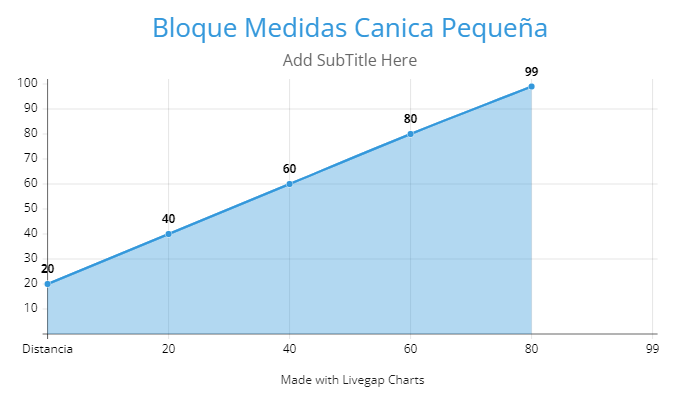
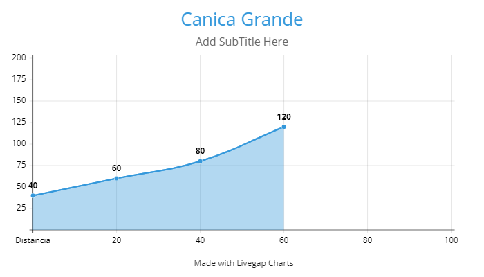

Fisica Transversalidad
Experimento de Caida Libre
Objetivo del Experimento:
observar y registrar el tiempo de la caida de cada de una de las canicas y anotar velocidades
El expermiento consiste en medir la distancia y tiempo que recorren las canicas calculando las diferencias entre cada altura, al igual que
medir la aceleracion y comparar varias medidas para ver las diferencias.
-
Materiales utilizados
- un riel hecho con cartulinas
- una canica chica
- una canica grande
- una regla graduada
- un marcador
- un cronometro
- una cajita de colores simulando el ladrillo
Grafica del Experimento

Tablas del Experimento
canica pequeña 1 ladrillos
| Cm de distancia | (s) tiempo | (s)2 tiempo | aceleracion a=d/t2 |
|---|---|---|---|
| 20 | 1.25 | 01.44 | 13.88 |
| 40 | 1.5 | 2.25 | 17.77 |
| 60 | 1.7 | 2.89 | 20.76 |
| 80 | 2.4 | 5.76 | 13.88 |
| 100 | 2.7 | 7.29 | 13.71 |
canica pequeña 2 ladrillos
| Cm de distancia | (s) tiempo | (s)2 tiempo | aceleracion a=d/t2 |
|---|---|---|---|
| 20 | 0.7 | 0.49 | 40.81 |
| 40 | 0.9 | 0.81 | 49.38 |
| 60 | 1.2 | 1.44 | 41.65 |
| 80 | 1.6 | 2.56 | 31.25 |
| 100 | 1.8 | 3.24 | 30.86 |
canica pequeña 3 ladrillos
| Cm de distancia | (s) tiempo | (s)2 tiempo | aceleracion a=d/t2 |
|---|---|---|---|
| 20 | 0.6 | 0.36 | 59.55 |
| 40 | 0.8 | 0.64 | 67.5 |
| 60 | 1 | 1 | 60 |
| 80 | 1.1 | 1.21 | 66.11 |
| 100 | 1.3 | 1.69 | 59.17 |
Grafica del Experimento

canica grande 1 ladrillos
| Cm de distancia | (s) tiempo | (s)2 tiempo | aceleracion a=d/t2 |
|---|---|---|---|
| 20 | 0.8 | 0.64 | 31.25 |
| 40 | 1.4 | 1.96 | 20.40 |
| 60 | 1.8 | 3.24 | 18.51 |
| 80 | 2 | 4 | 20 |
| 100 | 2.4 | 5.76 | 17.36 |
canica grande 2 ladrillos
| Cm de distancia | (s) tiempo | (s)2 tiempo | aceleracion a=d/t2 |
|---|---|---|---|
| 20 | 0.6 | 0.36 | 55.55 |
| 40 | 1 | 1.5 | 40 |
| 60 | 1.4 | 1.96 | 30.61 |
| 80 | 1.5 | 2.25 | 35.55 |
| 100 | 1.6 | 2.56 | 39.06 |
canica grande 3 ladrillos
| Cm de distancia | (s) tiempo | (s)2 tiempo | aceleracion a=d/t2 |
|---|---|---|---|
| 20 | 0.4 | 0.16 | 125 |
| 40 | 0.7 | 0.49 | 81.63 |
| 60 | 0.8 | 0.64 | 93.75 |
| 80 | 1 | 1 | 80 |
| 100 | 1.2 | 1.44 | 69.44 |